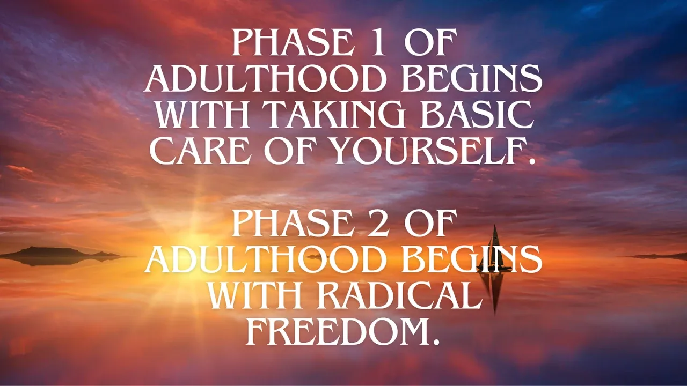
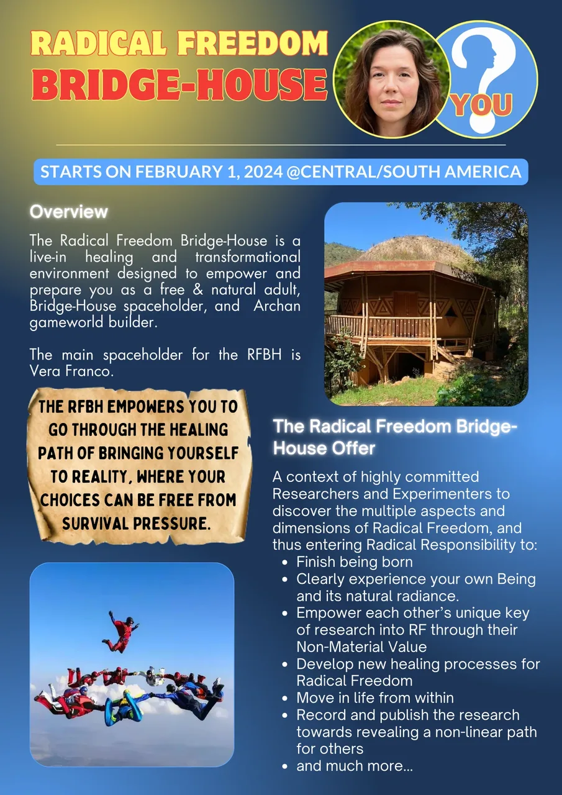
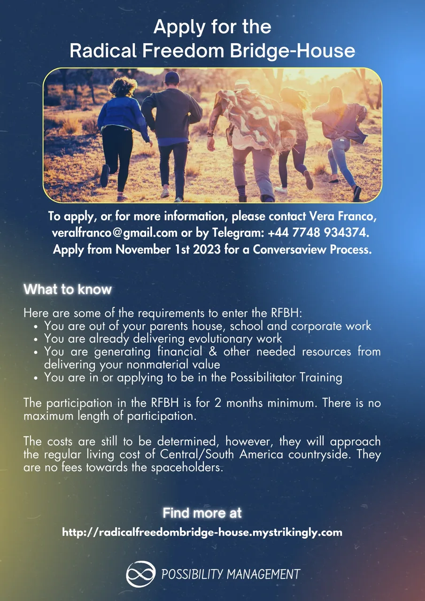
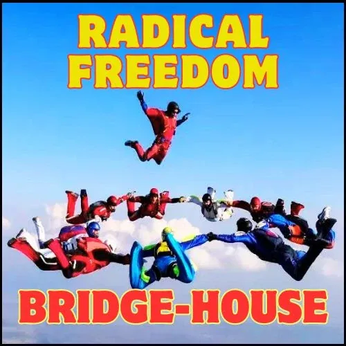

Radical Freedom
Bridge-House
- …
Radical Freedom
Bridge-House
- …
- The Radical Freedom Bridge-House empowers you to- Become Present- and have- Conscious Will- so that you are capable of being in Reality without any attachments or constraints.
- Radical Freedom Bridge-House- The Necessity for Radical Freedom- In Modern Culture you are thaught that responsiblity is a heavy burden that is externally motivated. - Parents tell their teenagers they cannot go out until they do their duties in the house. That they have to have good grades if they want go to their favorite hobbies. They criticise their children when they do something that does not go with the rules of the family culture. Or they praise their child's school achievements so they manipulate them to continue to act in the way they want. - Because children and most teenagers are completely dependent on the adults around them, them comply. The result is that the child and teenager learn that responsibility is externally motivated, something you have to do in order to belong, or be loved, or be seen. - This is not authentic Responsibility with a capital 'R'. This is survival. And because it is about survival it creates an internal Low Drama survival pressure. - Because Modern Culture does not offer Authentic Adulthood Initiations, most people stay at this survival level of pretend responsibility, while doing everything they can to avoid. Avoiding responsibility relaxes the survival pressure. - Responsibility is applied Consciousness. The more Conscious you are the more Responsible you can be. This means that Responsibility is actually internally motivated, by the natural Generosity and Love that comes with Consciousness. You naturally take Responsibility for the things that truly matter to you. - Human Beings long for Responsibility. They long for creating from their Quest-ions and Necessity, and creating from their Love in and of the world. They long for taking big stands in their lives, for letting their heart, their Being, and their Archetypal Lineage shine and do its work in the world. - But if you have not initiated yourself to the distinction of Responsibility, the more Responsibility you take the more survival pressure you have. You bounce between forcing yourself with pressure, and colapsing. - Authentic Responsibility means that you stand comes from a space within yourself that is free from emotional baggage, free from unmet childhood needs, free from expectations on others and yourself, free from low drama, which is all survival pressure. - This space of free choice is Radical Freedom. - Radical Freedom is freedom from survival stories about yourself, others, and the world. It is like getting to 'Zero', with no debt to anything or anyone, so you have enought space within you to be absurdly generous for nor reason. When you get to Radical Freedom, you can let more of your Being and Bright Principles shine through, because you are creating from a clear space. When you get to Radical Freedom, you can move from an authentically Responsible context. With Radical Freedom you can live in the context of Radical Responsibility. - Holding space for Radical Freedom Research- We've only just started the more directed research on Radical Freedom. Only now the necessity for Radical Freedom research became so relevant to so many Possibilitators on their evolutionary Path. And as E.C.C.O. would have it in the most auspicious of times, right when the development of emerging Bridge-Houses starts to grow. - Part of the path to Radical Freedom require some treading by yourself, when there is no one around to impress, convince, or perform to. However for the most part, getting to the zero of Radical Freedom cannot happen alone. Bridge-Houses provide nearly perfect environments for this healing and research field. - A - Bridge-Houseis an evolutionary gameworld. It leads from the edges of modern culture over to next culture -- Archiarchy- the culture that is naturally emerging now that matriarchy and- patriarchyhave run their course. The Bridge-House itself is on an ongoing path of transformation and redesign. This is only possible if the spaceholders (and participants) are themselves on the- Pathof Evolution through ongoing matrix building processes (emotional healing processes, adult and archetypal initiatory processes, and experimentation). As such, the Radical Freedom Bridge-House evolves with the research and evolution of all its members.- Each Possibilitator carries within them a unique key for the path to Radical Freedom. The healing and transformation will happen with the revealing and unfolding of this key, which is related to the Possibilitator's unique Gremlin and Box survival strategies, but also and mostly related to their Non-material Value. Each of these keys need space and time to grow, to mature, to produce results that bring their full Aliveness into the world. This growth and maturing happens at Radical Freedom Bridge-Houses - The Radical Freedom Bridge-House is a live-in healing and transformational environment contexted in Radical Responsibility, where highly committed Radical Freedom Researchers and Experimenters are empowered to discover the multiple aspects and dimensions of Radical Freedom, so that they can authentically live in the context Radical Responsibility. - The Bridge-House Gameplan- The Radical Freedom Bridge-House's gameplan is simple but not easy: Empowering and preparing you as a free & natural adult, Bridge-House Spaceholder, and Archan gameworld builder. - The RFBH uses authentic adulthood and archetypal - Initiationsas well as healing processes to empower Possibilitators with the specific clarity, agency and skills to bring more of their Being into life, as well as hold space for others to walk their path to Radical Freedom.- The way to unfold Archiarchy in terms of Radical Freedom is to hold space for your circle to get to the Zero of Radical Freedom. This means that every research and discovery of Radical Freedom is a Radical Freedom Spaceholder conversation. The participants in the RFBH will develop skills to hold space for others to research and develop Radical Freedom within themselves. - Starting at Zero - Bridge-House Training Center- It became clear for the Spaceholders of the Bridge-House Training Center and Bridge-House Training Center Bridge-House, that the only Bridge-Houses possible for most Possibilitators are Radical Freedom Bridge-Houses. Getting to enough Radical Freedom becomes easily one of the basic requirements to become an Archiarchy Bridge-House Spaceholder and Bridge-House Spaceholder Trainer. - In this way Radical Freedom Bridge-House is a 'Chapter 0' on the Bridge-House Training Center Journey. - For more Archiarchy Bridge-Houses to emerge in the world, there needs to be more Bridge-House Spaceholders. For more Bridge-House Spaceholders to exist in the worlds, there needs to be more Radical Freedom Spaceholders and Radical Freedom Bridge-House Spaceholders. - The RFBH empowers Spaceholders to become Radical Freedom Spaceholders, and Radical Freedom Bridge-House Spaceholders themselves. Holding the vision that the first BHTC Bridge-House (see below) will not be the last one is an integral part of the Archiarchal culture of - replacing ourselves.- We are interested that the RF Bridge-House function following the Tansley effect. The Tansley effect is creating multiple parallel experiments working on the same ‘problem’ - in this case, building regenerative cultures for a bright future for humanity of Planet Earth. - It is part of the Radical Freedom Bridge-House that the discoveries are widely accessible so that others can have maximum Transformation and Possibility. Each group of skilled and experimental Radical Freedom researchers routinely share their findings. Each new independent finding becomes a common input into everyone else’s process. Each group of skilled and experimental edgeworkers routinely share their findings. Each new independent finding becomes a common input into everyone else’s process. The cumulative outputs is part of the - Creative Commons. The Tansley effect is much more effective and interesting than- Competition.
-
The Bright Principles of the Radical Freedom Bridge-House- POSSIBILITY- CLARITY- HEALING- PRESENCE- LOVE- EMPOWERMENT
- RADICAL FREEDOM- BRIDGE-HOUSE- When, Where, How Much...?- Let's get the logistics out of the way. - When?- The Radical Freedom Bridge-House starts on February 1, 2024 for a period of 3-to 6 months. The participation in the RFBH is of 2 month minimum. Training Makers are planning it to kick-off after an Expand The Box Training, followed by a Possibility Village Lab, and finally a Heal From School Lab. - Where?- The RFBH will be located in Central or South America. The final location is still to be announced. The tie, for now, is between San Cristóbal, Mexico and Gramado, Brazil. It is possible that the RFBH move location after 3 months or splits in multiple Radical Freedom Bridge-Houses. - How much?- We do not have concrete final prices as the location is still to be determined. We are estimating that the cost of rent including all utilities will be between 200-400 Euros / month. - The cost for the food is that of local market food. We share food costs equally. - Incidental living costs would need to be considered: buying seeds for the garden, hardware tools for fixing the place, etc... - There are no fees towards the spaceholders. - If the lack of money is the reason why you are hesitating to join the RFBH (or any Bridge-House), it is ridiculous. Because there is enough money in the world for you to join the Bridge-House. The conversation is not then about money, but: how are you blocking the resources to support your Evolutionary Path to flow through you? - This question is the gateway to multiple Emotional Healing Processes and thoughtware upgrade. - To prepare yourself, please read and - do the experiments at:- http://becomemoney.mystrikingly.com- http://youandyourjob.mystrikingly.com- http://nonmaterialvalue.mystrikingly.com- How many?- We are estimating that the Bridge-House will be inhabited by 8-to-15 spaceholders/gameworld builders at a time. - Context & Traditions of the Radical Freedom Bridge-House- The context of the Radical Freedom Bridge-House is - Radical Responsibility.- If we were perfectly clear about what - Radical Responsibilityis, there would no need to say more about the subject. It is, of course, not the case.- Radical Responsibility means: - What is, is, as it is, here and now in the moment, with no story attached.(Arnaud Desjardins)
- Just this.(Lee Lozowick)
- There is no such thing as a problem. It is impossible to be a victim. Irresponsibility is an illusion. You have a Box. You are not your Box. Low drama is Gremlin food. Responsibility is applied consciousness. If you see a job it is your job to do. The universe is built out of archetypal love.(Clinton Callahan)
- A Radically Responsible context invokes in each person the - Free and Natural Decontaminated AdultEgostate Archetypally Initiated Woman or Man, and the- Creative Collaborationbetween them.- The unquenchable clarity and unreasonable possibilities that emerge from such a clear context can make your - Gremlingo into an immediate freak-out self-abuse feeding-frenzy accompagnied- Voices,- Self-Cannibalismbehaviour,- Gremlin Violence,- Shame, Doubt,- Depressionand other mixed emotions,- Conclusions,- Projections,- Expectationsand- Resentments. This is why we have a list of requirement to apply to the RFBH.- In the RFBH, we apply - Torus Technologyfor our meeting and decision-taking. For more information about Torus Technology, go here:- https://torustechnology.mystrikingly.com/- .- The RFBH makes use of the distinctions, processes, skills and technology of - Possibility Management (- http://possibilitymanagement.org). Technology, tools and processes from other contexts are used to further the purpose of the RFBH, such as Permaculture, Natural Farming, Reforestation, Family Constellation, etc...- Documentation - The RFBH is a research center, a healing and transformation space, and a training center. Therefore all the research from the healing and trasformation is - documented and sharedprofusely to all Radical Freedom researchers and Bridge-House Spaceholders. This will be done in various forms: newsletters, videos, articles, manuals, worktalks, workshops, group processes, initiations, and more.- What You Will Learn in The Bridge-House- The path is clear and to be co-designed by every member of the Radical Freedom Bridge-House. Therefore there is not curriculum or pre-defined formula. You make the path by walking it. Still there will be important aspects and dimension of healing to develop and unfold, such as: - Finish being born
- Develop Inner Structure
- Clearly experience your own Being and its natural radiance.
- Empower each other’s unique key of research into RF through their Non-Material Value
- Develop new healing processes for Radical Freedom
- Move in life from within
- Learn to hold space for Radical Freedom Bridge-Houses
- and much more... - Requirements to Apply to the BHTC Bridge-House- Requirements: - You have completely and irrevocably left your parents’ house for more than 6 months at the start of your stay (this means that you have no clothes, photos, diplomas or anything else in storage in your parent’s house),
- You are no longer studying in a modern culture school(University or other programs) for the past 3 months,
- You are no longer working for a corporationfor the past 3 months,
- You hold space for evolutionary spaces (healing and transformation) for more than 3 months,
- You have participated or applying to the Gremlin TransformationCore Chapter,
- You have participated in a Spaceholder Training (RCST, FCST, Possibility Coaching Training, Matrix Building Team or otherwise),
- You have participated in at least one Expand The BoxTraining,
- You have participated in at least one Possibility Lab,
- You are in or applying to the Possibilitator Training,
- You have the ability to generate more than 600 Euros / month of income on average through delivering your Nonmaterial Value& other nickel machine
- The participation in the BHTC BH is of 1 month minimum, there is no maximum length of participation. - To apply, please contact Vera Franco, veralfranco@gmail.com or by Telegram: +44 7748 934374. - Applications are open from November 1st, 2023. - Vera will set up a conversaview with you. A conversaview is a space where both you and the spaceholder discover what is the next step for your participation in the Bridge-House. It can be anything. No two people would have the same steps. - When it is evident that you have entered the Bridge-House Training Center and that your next step is to join the BHTC BH, you have been organically ‘integrated’ in the amoeba, then you will be officially welcome to join the BHTC BH.



- Spaceholders- ...of the first Bridge-House Training Center.
 - # Vera Franco- Vera's first experince of Evolutionary Community living started in Findhorn Ecovillage where she lived for 10 years in Scotland. As she discovered her Nonmaterial Value, she moved out and became a nomad and a Possibility Management Trainer, now delivering - Expand The Boxand Possibility Labs around the world.- Vera is a educator at Ecoversity, and spaceholder for the Possibilitator Training, which is a Path for Possibilitators to find and sharpen their Nonmaterial Value. - In addition, Vera navigates Gremlin Transformation and Adult Egostate Decontaminations since 2020 for hundreds of gratefully transformed people. - She was a member of the Writing Bridge-House from August 2021 to August 2022 along with Anne-Chloé, Clinton and Devin Gleeson.
- # Vera Franco- Vera's first experince of Evolutionary Community living started in Findhorn Ecovillage where she lived for 10 years in Scotland. As she discovered her Nonmaterial Value, she moved out and became a nomad and a Possibility Management Trainer, now delivering - Expand The Boxand Possibility Labs around the world.- Vera is a educator at Ecoversity, and spaceholder for the Possibilitator Training, which is a Path for Possibilitators to find and sharpen their Nonmaterial Value. - In addition, Vera navigates Gremlin Transformation and Adult Egostate Decontaminations since 2020 for hundreds of gratefully transformed people. - She was a member of the Writing Bridge-House from August 2021 to August 2022 along with Anne-Chloé, Clinton and Devin Gleeson. -
What is Radical Freedom?- # The 'V' Process Pressure vs. Reality
- Impressions of Bridge-Houses- And more to come...



- Do you dare to become Radically Alive? - ContactSelect...
- StartOver.xyz Note - NOTE:This website is a- Bubble in the Bubble Mapof the free-to-play, massively-multiplayer, online-and-offline, thoughtware-upgrade, matrix-building, personal-transformation, adventure-game called- StartOver.xyz. It is a- doorwayto- experimentsthat- upgrade your thoughtwareso you can- createmore- possibility. Your knowledge is what you think- about. Your- thoughtwareis what you use to think- with. When you- change your thoughtware, you go through a- liquid stateas your mind- reorganizesitself. Liquid states can bring up transformational- feelingsand- emotions. By- upgrading your thoughtwareyou- build matrixto hold more- consciousness (archived — not captured)and leave behind a life of- reactivity. No one can upgrade your thoughtware for you. No one can stop you from upgrading your thoughtware. Our theory is that when we- collectively build1,000,000 new Matrix Points we will change the morphogenetic field of the human race for the better. Please choose- responsiblyto read this website. Reading this whole website is worth 1 Matrix Point. Doing any of the experiments earns you additional Matrix Points. Please use Matrix Code BHTCBHxx.00 to log your Matrix Point for reading this website on- StartOver.xyz. Thank you for playing full out!